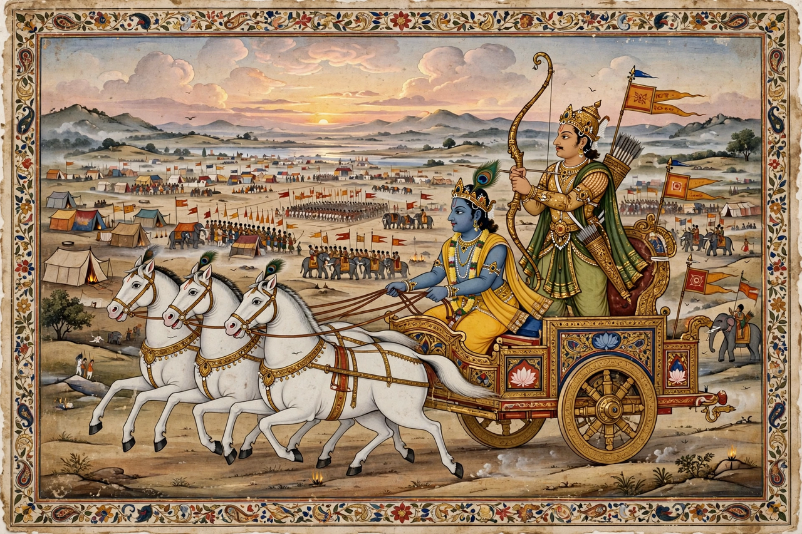

Arjuna
| Arjuna | |
|---|---|
 | |
| Other names | Partha, Dhananjaya, Kaunteya, Savyasachi |
| Parents | Pandu (father); Kunti (mother); Indra (divine father) |
| Spouses | Draupadi, Subhadra, Ulupi, Chitrangada |
| Children | Abhimanyu, Iravan, Babruvahana, Srutakirti |
| Weapon | Gandiva bow; Pashupatastra |
Arjuna (Sanskrit: अर्जुन) is one of the central protagonists of the Hindu epic Mahabharata and the hero of the Bhagavad Gita. The third of the five Pandava brothers, he is celebrated as the greatest archer of his age, the inseparable friend and brother-in-law of Krishna, and the son of the god Indra.
Early life
Arjuna was born to Kunti, who invoked Indra, king of the gods, by a boon that allowed her to summon any deity. Raised at Hastinapura with his brothers and their Kaurava cousins, he became the favourite pupil of the weapons-master Drona, famed for his concentration — when asked what he saw while aiming at a wooden bird, he replied that he saw only the bird's eye. At Draupadi's svayamvara he alone strung the great bow and pierced the target, winning her hand; she became the common wife of the five Pandavas.
Exiles and adventures
During a year of exile for breaking a vow, Arjuna travelled the length of India, marrying the Naga princess Ulupi, the Manipuri princess Chitrangada, and — with Krishna's connivance — Krishna's sister Subhadra. In a later twelve-year forest exile, he performed penance in the Himalayas, wrestled with the god Shiva disguised as a hunter (the Kiratarjuniya episode), and received the divine Pashupatastra weapon; he also spent time in Indra's heaven learning celestial arms and the arts of music and dance. During the final year of incognito exile at the court of Virata, a curse forced him to live as the dance-teacher Brihannala, yet he still single-handedly routed the Kaurava army when it raided Virata's cattle.
The Bhagavad Gita and the war
On the first day of the Kurukshetra war, seeing his teachers, grandfather Bhishma and cousins arrayed against him, Arjuna sank down in despair and refused to fight. Krishna, serving as his charioteer, responded with the discourse of the Bhagavad Gita — on duty, detachment and the immortal soul — that has become one of Hinduism's most sacred texts. In the eighteen days of war Arjuna was instrumental in the deaths of Bhishma, Jayadratha (whose head he delivered miles away before sunset, fulfilling a vow to avenge his son Abhimanyu), and finally Karna, his lifelong rival and, unknown to him, his eldest brother.
Later life and legacy
After the war Arjuna helped his brother Yudhishthira rule, and at the end of his life joined the Pandavas' final journey to the Himalayas, falling on the way. The name "Arjuna" is invoked across India and Southeast Asia as a byword for skill, focus and righteous conduct; the Arjuna Award, one of India's highest sporting honours, bears his name.